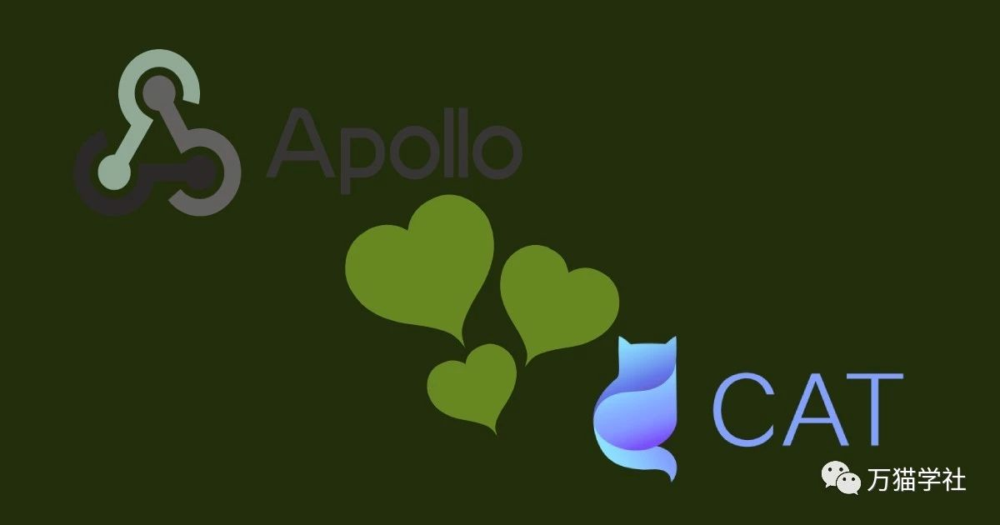

以下就是这个示例的运行环境，如果版本号不一样，区别也应该不会很大，可以根据实际情况做相应调整。
欢迎关注微信公众号：万猫学社，每周一分享Java技术干货。
众所周知，Apollo对CAT是有依赖的，但不是强依赖，而是使用了SPI技术，只有项目里引用了cat-client才会生效。目前我们想把CAT客户端配置放在Apollo里，也就是在CAT客户端初始化之前从Apollo读取相应配置，这就形成了循环依赖，所以首先要去除Apollo对CAT客户端的依赖。
查看Apollo客户端的源码，我发现有一个叫做MessageProducerManager的接口，再看一下META-INF\services\com.ctrip.framework.apollo.tracer.spi.MessageProducerManager文件，发现这个接口的默认实现是DefaultMessageProducerManager，如果发现CAT客户端被引入时，这个类就会初始化CAT客户端并向CAT客户端发送消息。MessageProducerManager接口还有另外一个实现，就是NullMessageProducerManager类，这个类返回的是NullMessageProducer实例，任何消息都不发送。
想要去除CAT的依赖，在项目里使用NullMessageProducerManager的实现就可以了。在META-INF\services\文件夹中创建如下文件：
com.ctrip.framework.apollo.tracer.spi.MessageProducerManager
并添加如下内容：
com.ctrip.framework.apollo.tracer.internals.NullMessageProducerManager
欢迎关注微信公众号：万猫学社，每周一分享Java技术干货。
引入CAT客户端时，我遇到的一个大坑，所以告诫大家：千万不要使用源码中cat-client打包出来的客户端。因为源码中的cat-client是旧代码，已经不维护了。这里吐槽一下：不维护了为什么不马上删除，害的我读了一个星期的旧代码。最新的源码在lib/java目录下，可以自己用maven打包，或者在pom.xml添加Maven依赖:
<dependency>
<groupId>com.dianping.cat</groupId>
<artifactId>cat-client</artifactId>
<version>3.0.0</version>
</dependency>另外，还有在repositories节点中增加如下库，否则是无法下载到jar包的。
<repository>
<id>Unidal</id>
<url>http://unidal.org/nexus/content/repositories/releases</url>
</repository>欢迎关注微信公众号：万猫学社，每周一分享Java技术干货。
初始化CAT客户端，我们要做的就是在spring boot初始化时，读取Apollo配置，再初始化CAT客户端。示例如下：
import com.ctrip.framework.apollo.spring.annotation.EnableApolloConfig;
import com.dianping.cat.Cat;
import lombok.extern.slf4j.Slf4j;
import org.springframework.beans.factory.annotation.Value;
import org.springframework.context.annotation.Configuration;
import javax.annotation.PostConstruct;
/**
* @author 万猫学社
*/
@Slf4j
@Configuration
@EnableApolloConfig
public class AppConfig {
/**
* 每个项目的domain都是不同的
* 所以不要从Apollo中读取
* 这里使用的Apollo的app.id
*/
@Value("${app.id}")
private String domain;
/**
* CAT服务端的端口，从Apollo中读取
*/
@Value("${cat.server.port}")
private int port;
/**
* CAT服务端的HTTP端口，从Apollo中读取
*/
@Value("${cat.server.http.port}")
private int httpPort;
/**
* CAT服务端的IP列表，多个以逗号分隔，从Apollo中读取
*/
@Value("${cat.server.servers}")
private String servers;
/**
* 初始化CAT客户端
*/
@PostConstruct
public void initCat() {
try {
Cat.initializeByDomain(domain, port, httpPort, servers.split(","));
} catch (Exception e) {
log.error("Initialization of CAT client failed", e);
}
}
}欢迎关注微信公众号：万猫学社，每周一分享Java技术干货。
总结一下，CAT客户端从Apollo中读取配置，总共分3步：
MessageProducerManager接口使用NullMessageProducerManager类实现。欢迎关注微信公众号：万猫学社，每周一分享Java技术干货。